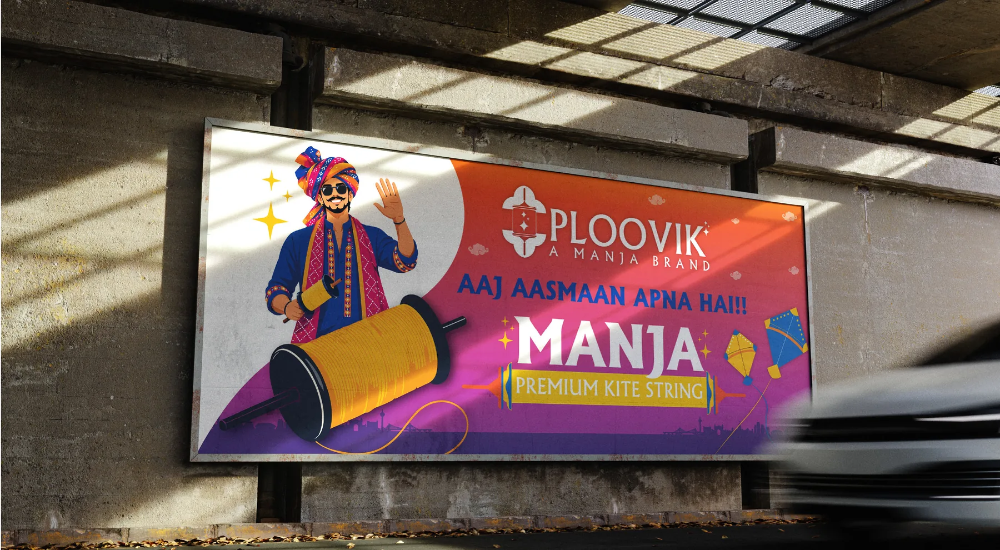

Work / 02 — Personal & Experimental Projects · Branding & Visual Identity
Ploovik
A personal brand identity inspired by Gujarat’s Uttarayan culture, kite flying, traditional craftsmanship and the connection between people, rooftops and the sky.
- Role
- Brand identity, packaging, illustration
- Scope
- Logo, colour system, typography, label, gift box, promotion
- Tools
- Adobe Illustrator, Adobe Photoshop
- Year
- 2026

Story
Every thread has a story.
Every winter, the rooftops of Gujarat come alive. Kites fill the sky, charkhis spin in familiar hands, and families gather to celebrate a tradition that has been part of their lives for generations.
For us, manja is more than a thread. It connects people, carries memories, and brings generations together under the same sky.
Identity

Colour
- Patang Yellow#FDBC16
- Uttarayan Orange#F1582D
- Gulabi Magenta#BA4298
- Aakash Blue#1C6CB5
Typography
- Albertus Extra BoldHeadlines and key brand messaging
- Albertus MediumBrand names and supporting text

Illustration


Packaging


Applications



Ploovik. Rooted in tradition. Made for the skies.Next project